Planen · Dach · Aufmaß · Garten
Finnvelo Haus und Gartenplaner
Windows-ProgrammDer Finnvelo Haus- und Gartenplaner ist ein Windows-Programm für Häuser, Wohnungen und Gärten – vom Grundriss mit echten Maßen über das Dach samt Konstruktion bis zum Aufmaß für alle Gewerke. Er zeigt alles in 3D und als maßstäblichen 2D-Plan, plant Leitungen und Außenanlagen und übergibt das Aufmaß an die Finnvelo Auftragszentrale.
Beschreibung
Neu in Fassung 2.0.2: Das Dach folgt jetzt dem Grundriss, auch bei L-, T- und U-Häusern, und wird wie vom Zimmerer konstruiert. Dazu kommen ein Sparren-Richtwert, der Bauplan als PDF, ein Ansichtsfenster mit Geschossen und Schichten, die Raumabwicklung, ein Leitungs-Reiter mit Fußbodenheizung, neue Fenster und 74 neue Texturen. Fassung 2.0.3 behebt Fehler: Die Wandgestaltung bleibt beim Etagenwechsel erhalten, Fassaden liegen immer außen, die Gesamtansicht zeigt die Etagen deckungsgleich unter dem Dach, Wandstärken stimmen auf den Millimeter, und Flächen und Beschriftung der Raumabwicklung sind korrigiert. Fassung 2.0.4 bringt Fensterbänke innen (wählbar) und außen, den Rollladen im Sturz, einen geschlossenen Dachkasten, die Terrassenüberdachung mit Pfostenträgern, Kopfbändern, Glasscheiben, Profilen und Rinne samt Blick „Unter dem Dach“ sowie Innenwände in eigener Stärke; das Flackern an Fenstern, Dach und Wänden ist behoben. Seit Fassung 2.0 ist der Planer ein Windows-Programm statt einer HTML-Datei.
Geplant wird Etage für Etage – vom Keller über bis zu fünf Obergeschosse bis ins Dachgeschoss. Grundrisse entstehen als Rechteck, L- oder U-Form oder frei gezeichnet, mit mehreren Räumen, Trennwänden, Türen und Fenstern. Fenster gibt es mit Rahmen aus Kunststoff, Holz, Alu oder Holz-Alu, mit ein- bis dreifacher Verglasung, bodentief und mit Rollladen. Das Dach folgt dem Grundriss: L-, T- und U-Häuser bekommen ein Hauptdach mit Quergiebeln und Kehlen – als Sattel-, Walm-, Zelt-, Pult- oder Flachdach, mit Kniestock, Überstand, Dachfenstern und sieben Eindeckungen. Im 2D-Plan lässt sich die Dachform durch Ziehen an Ecken und Kanten ändern, etwa zu einer geschlossenen L-Form als Terrassenüberdachung mit Traufpfette und Pfosten.
Die Dachkonstruktion entsteht wie vom Zimmerer: Sparren, Grat- und Kehlsparren, Schifter, First- und Fußpfetten, Stuhlsäulen, Kehlbalken und Wechsel an den Dachfenstern, dazu eine Holzliste Stück für Stück. Eine Sparren-Vorbemessung schlägt als Richtwert den kleinsten passenden KVH-Querschnitt vor – aus den Lasten der Deckung (Ziegelgewichte mit Herstellerquelle), dem Schnee nach Zone und Geländehöhe und dem Wind nach Windzone – und nennt das Gewicht des Dachs. Sie ersetzt ausdrücklich keine Statik. Für Kunden entsteht ein Bauplan als PDF mit Deckblatt, Grundrissen, Dachaufsicht, Ansichten und Holzliste, als Vorplanung gekennzeichnet.
Der 2D-Plan zeigt jede Etage und die Außenanlage maßstäblich: Maßketten außen mit Teilmaßen an den Öffnungen, lichte Raummaße und Flächen, Einrasten an Raster, Ecken, Wänden und rechtem Winkel, Ebenen je Gewerk zum Ein- und Ausblenden. Die Dachaufsicht passt zum 3D-Bild, die Raumabwicklung klappt Boden, Wände und Decke eines Raums auf, und beim Zoomen zeigt der Plan die Kästchengröße an. Im Ansichtsfenster blendest du Geschosse und Schichten ein und aus – Wände, Decke, Boden, Möbel, Innenverkleidung, Dampfbremse, Dämmung, Dachhölzer, Unterspannbahn, Lattung, Ziegel, Leitungen und Maße – und wählst die Blickrichtung.
Leitungen legst du im eigenen Reiter an: Trinkwasser kalt und warm, Zirkulation, Abwasser, Regenwasser, Heizung mit Vor- und Rücklauf, Gas, Strom, Leerrohr und Daten, jeweils mit Abmessung, Werkstoff, Verlegeart und Anschlusshöhen, dazu Kabel- und Rohrtyp. Die Fußbodenheizung wird als Fläche mit Rohrlänge geplant. Hinweise zu den Installationszonen für Stromleitungen helfen beim Verlegen.
Draußen geht es weiter: Gartenflächen aus Pflaster, Platten, Zufahrt, Kies, Rasen, Beet oder Rindenmulch mit Schichtaufbau, Randsteine, Gartenmauern mit Fundament, Zäune, Hecken und 15 Pflanzenarten. Vordach, Veranda, Carport und Pergola setzt du mit einem Klick an die Hauswand, ein Terrassendach ebenso. Zum Grundstück gehört das Bundesland; für 14 Länder nennt der Planer die Grenzabstände für Pflanzen mit Fundstelle – als Hinweis, nicht als Rechtsauskunft.
Das Aufmaß umfasst 76 Leistungen in allen elf Gewerken der Finnvelo Auftragszentrale – Maurer, Maler, Trockenbau, Fliesen, Fenster und Türen, Dach, Elektro, Sanitär, Heizung, Garten- und Landschaftsbau und Allgemein. Jede Position hat einen prüfbaren Rechenweg mit Rechenansätzen, Abzügen und Nebenrechnungen etwa für Neigung und Schräglänge. Die Abzugsgrenzen nach VOB/C sind als ungeprüft gekennzeichnet, eigene geprüfte Werte lassen sich speichern. Dazu kommen Formteile und Wanddurchbrüche bei Leitungen, Aushub, Tragschicht und Bettung im Garten, Kehlen, Rollläden, Fußbodenheizung, die Bodenplatte mit Beton, Schalung und Bewehrung als Richtwert sowie die Geschossdecken. Das Aufmaßblatt gibt es als PDF, und an die Auftragszentrale geht es als Datei mit Projekt, Aufmaß und Planbildern.
Eingerichtet wird aus einer Bibliothek mit 127 Einträgen und mit Einrichtungsvorlagen für Wohnzimmer, Schlafzimmer, Küche und Büro. Eigene Möbel entstehen im Baukasten oder im Möbel-Editor, fertige 3D-Modelle im Format .glb lassen sich laden. Möbel bleiben in ihrer Etage und stoßen an Wände, Decke und Dachschräge. Jede Wand lässt sich innen und außen einzeln gestalten – mit Pinsel, Mustern, Tapeten und 74 neuen, selbst erzeugten Texturen für Böden, Tapeten, Fassaden, Dachdeckungen und Garten. Angesehen wird alles in 3D, als 2D-Plan oder im Ego-Rundgang; die mittlere Maustaste dreht die Ansicht.
Grundriss mit echten Maßen
Rechteck, L, U oder frei, mehrere Räume und Trennwände – Etage für Etage vom Keller bis zum Dachgeschoss.
Dach nach Grundriss
Hauptdach mit Quergiebeln und Kehlen auch bei L-, T- und U-Häusern; Form im 2D-Plan durch Ziehen änderbar.
Aufmaß für alle Gewerke
76 Leistungen in elf Gewerken, jede Position mit prüfbarem Rechenweg; Aufmaßblatt als PDF.
2D-Plan mit Maßketten
Maßstäblich je Etage, Teilmaße an Öffnungen, lichte Maße und Flächen, Ebenen je Gewerk.
Garten und Außenanlagen
Flächen mit Schichtaufbau, Mauern, Zäune, Hecken, Pflanzen, Carport, Pergola und Terrassendach.
3D und Ego-Rundgang
Das Haus von allen Seiten ansehen oder mit Maus und Tastatur durch die Räume gehen.
Dachkonstruktion wie vom Zimmerer
Sparren, Grat- und Kehlsparren, Schifter, Pfetten, Stuhlsäulen, Kehlbalken – mit Holzliste Stück für Stück.
Sparren-Richtwert
Querschnitt aus Deckung, Schnee- und Windzone als Richtwert, mit Gewicht des Dachs. Ersetzt keine Statik.
Bauplan als PDF
Deckblatt, Grundrisse, Dachaufsicht, Ansichten und Holzliste für Kunden – als Vorplanung gekennzeichnet.
Ansichtsfenster mit Schichten
Geschosse und Schichten von Dämmung bis Ziegel ein- und ausblenden, Schnellwahl wie „Nur Holz“ oder „Rohbau“.
Leitungen und Fußbodenheizung
Wasser, Abwasser, Heizung, Gas, Strom und Daten mit Abmessung und Werkstoff; Fußbodenheizung als Fläche mit Rohrlänge.
Fenster und Wände
Fenster mit Rahmen, Verglasung und Rollladen; jede Wand innen und außen einzeln gestaltbar, 74 neue Texturen.
Raumabwicklung
Boden, Wände und Decke eines Raums aufgeklappt – passend zur Dachaufsicht und zum 3D-Bild.
Grenzabstände mit Quelle
Abstände für Pflanzen in 14 Bundesländern mit Fundstelle – als Hinweis, nicht als Rechtsauskunft.
Übergabe an die Auftragszentrale
Projekt, Aufmaß und Planbilder als Datei – die Auftragszentrale macht daraus das Angebot.
Oberfläche
Die ersten sieben Ansichten zeigen die Fassungen 2.0.2 und 2.0.3 mit einem Beispielhaus – L-förmiger Grundriss mit Satteldach, ohne echte Daten. Die übrigen stammen noch aus der früheren HTML-Fassung 1.0.1. Ein Klick auf ein Bild öffnet es groß.
Fassung 2.0.2 und 2.0.3
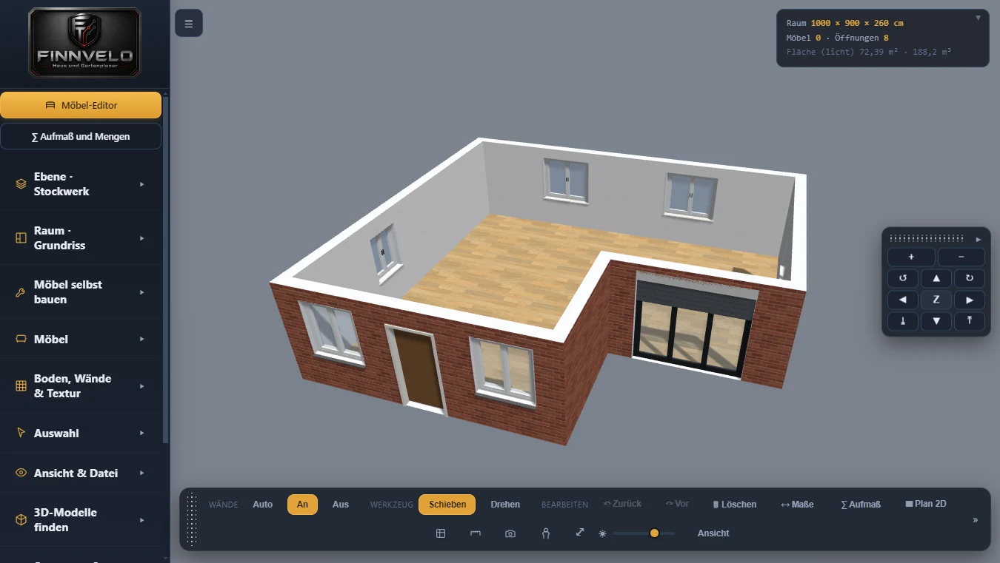
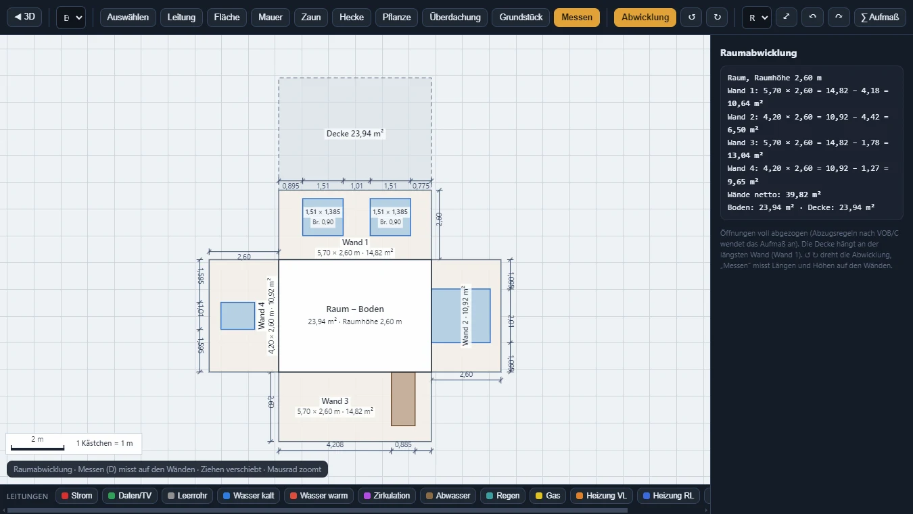
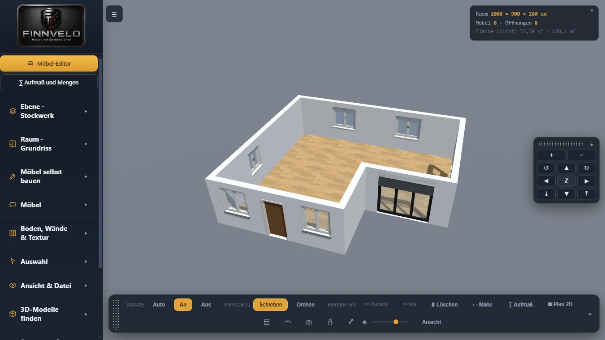
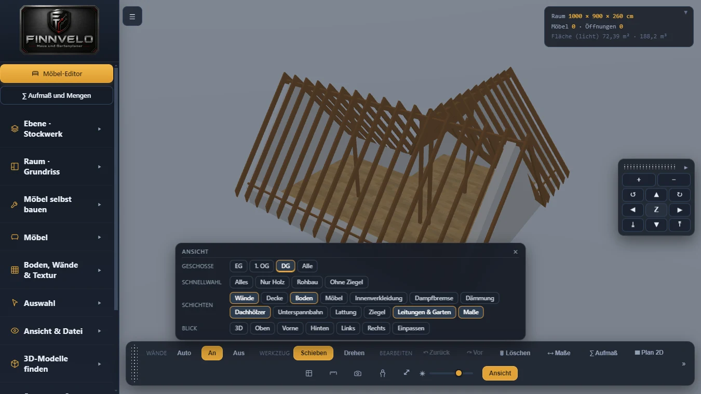
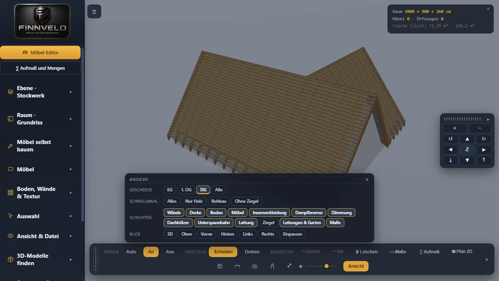
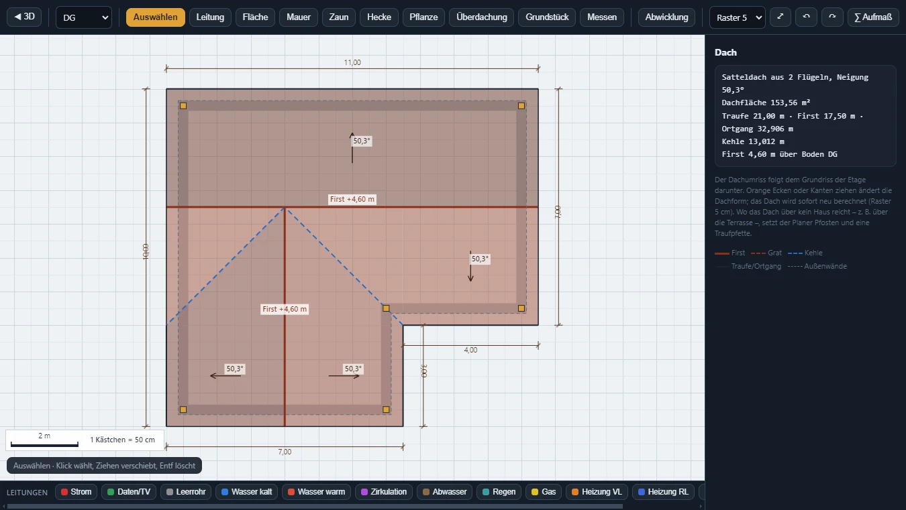
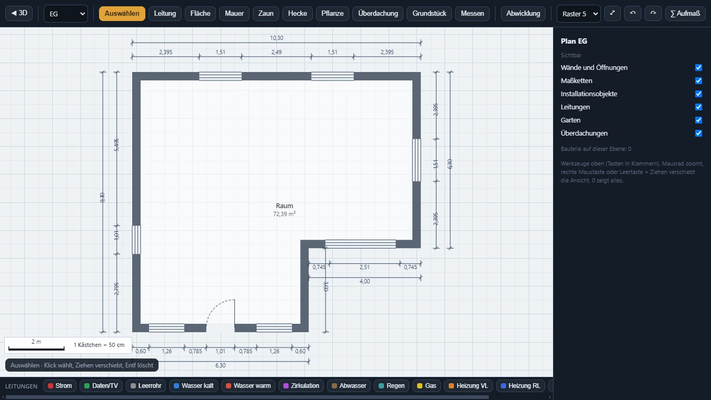
Planen und Einrichten (Fassung 1.0.1)
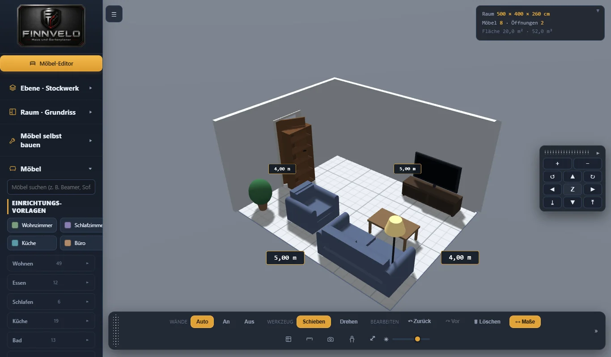
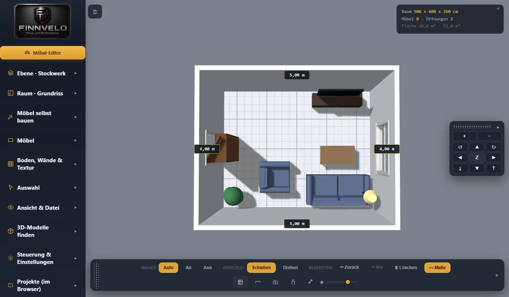
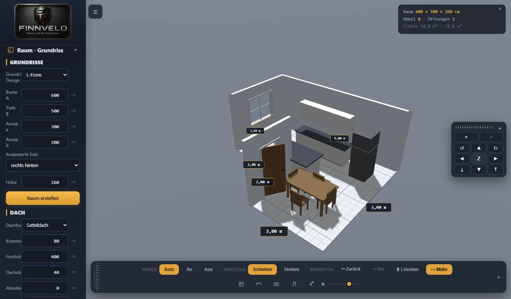
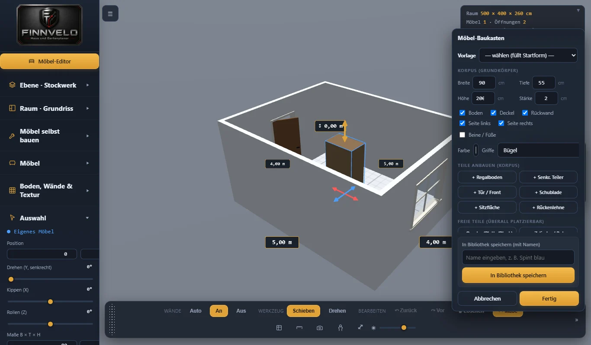
Gestalten und Einstellen (Fassung 1.0.1)
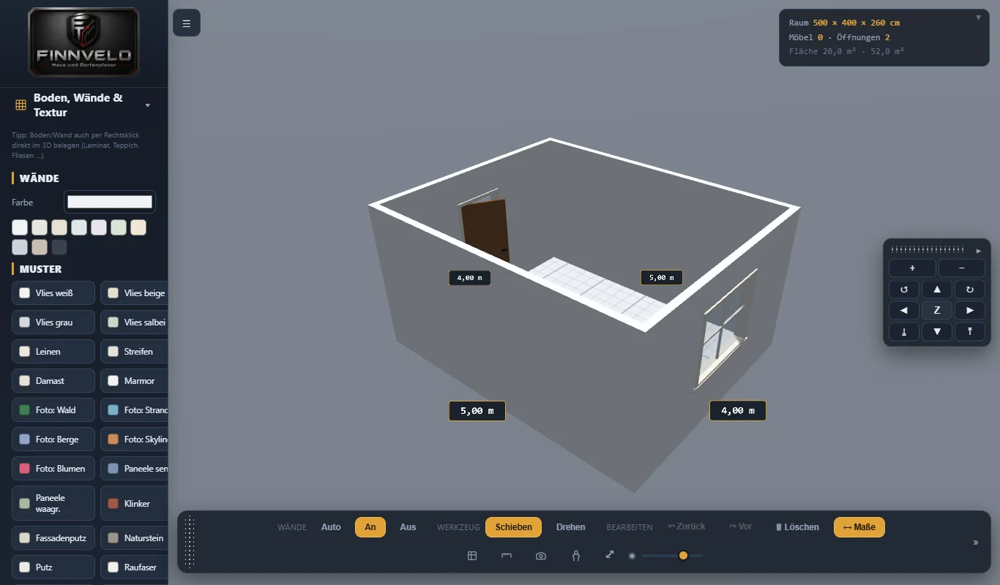
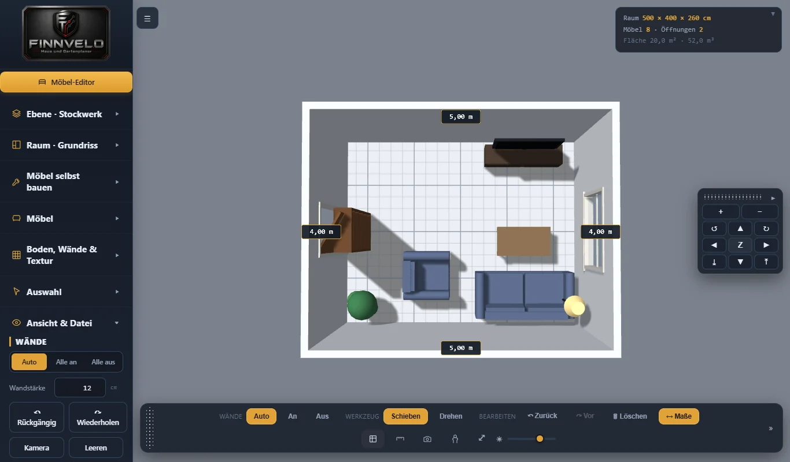
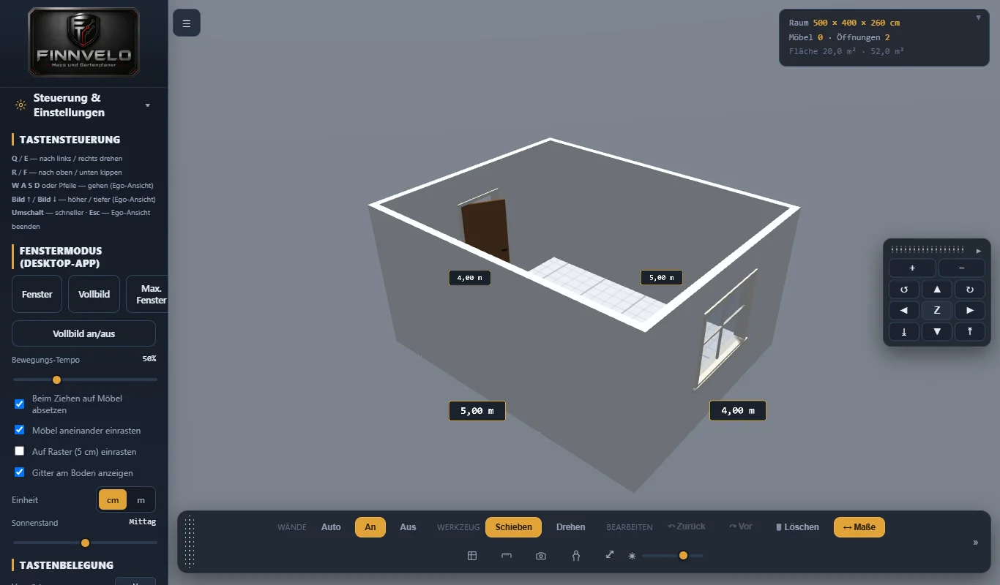
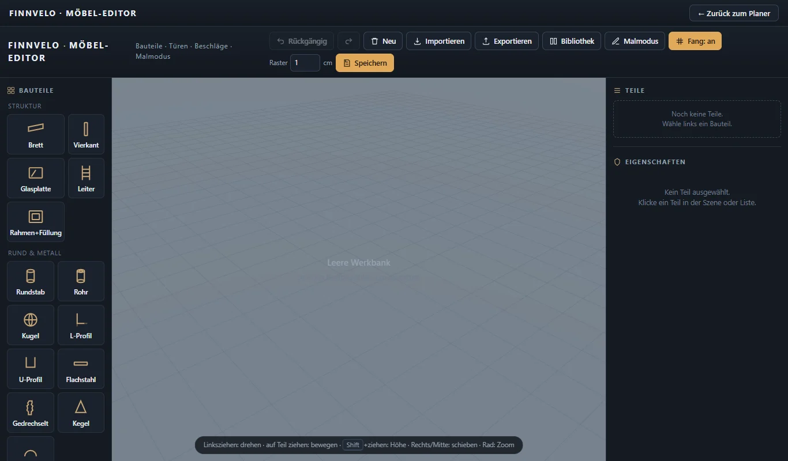
Haus, Etagen und Dach (Fassung 1.0.1)
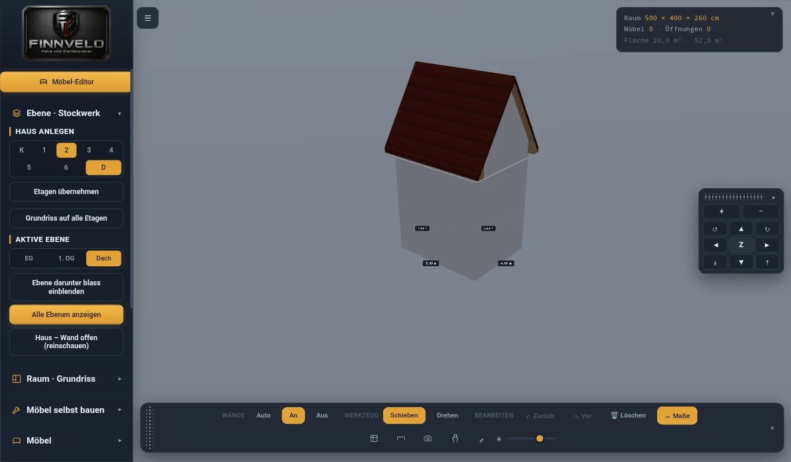
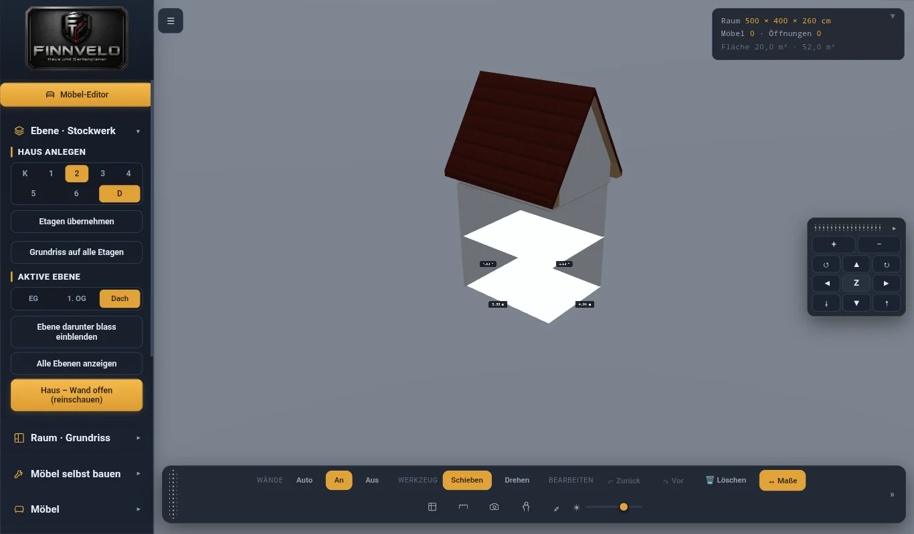
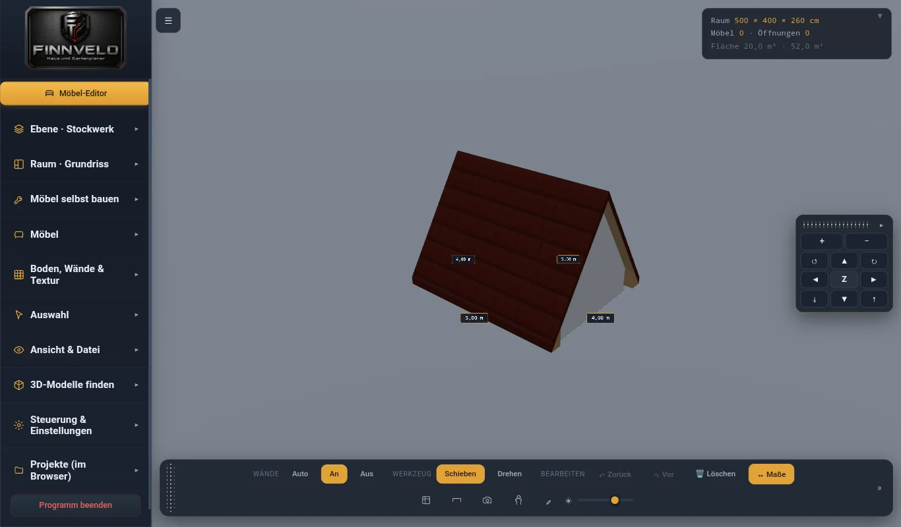
Einstellungen – das kannst du anpassen
Die Einstellungen liegen in fünf Bereichen des Programms. Die Bezeichnungen stehen hier so wie im Planer:
Steuerung & Einstellungen
- FenstermodusFenster, Vollbild oder maximiertes Fenster.
- Bewegungs-TempoWie schnell sich Ansicht und Ego-Rundgang bewegen.
- EinrastenBeim Ziehen auf Möbel absetzen, Möbel aneinander einrasten, auf Raster (5 cm) einrasten.
- Gitter und EinheitGitter am Boden anzeigen; Einheit Zentimeter oder Meter.
- Sonnenstand und TastenbelegungLicht im 3D-Bild; jede Taste neu belegbar.
Projekte & Updates
- ProjekteSpeichern, Laden, Löschen.
- SpeicherortStandard-Speicherort wählen.
- Version & Updates„Nach Updates suchen“ und „Automatisch nach neuen Fassungen suchen“. In der Auftragszentrale eingebunden: wird zusammen mit ihr aktualisiert.
Dach (Raum · Grundriss)
- Form und MaßeDachform, Kniestock, Firsthöhe, Dachüberstand, Abseitenwand, Zwischendecke.
- DachkonstruktionDachkonstruktion zeigen, Sparrenabstand, Sparren breit und hoch, Pfetten mitzeichnen, Stückliste anzeigen.
- AussehenDachfarbe und Dachfenster.
- Sparren bemessenSchneelastzone, Geländehöhe, Windzone; Querschnitt aus der Bemessung übernehmen.
Aufmaß-Einstellungen (∑ Aufmaß)
- BauweiseTrennwände als Mauerwerk oder Trockenbau, Gasleitungen zum Gewerk Sanitär oder Heizung, Kellerwände außen mit Putz und Anstrich.
- RohbauBodenplatte (Dicke, Überstand), Sauberkeitsschicht, Dämmung unter der Bodenplatte, Dicke der Geschossdecke.
- AbzugsgrenzenÜbermessung nach VOB/C, eigene geprüfte Werte speicherbar.
- LeistungenJede Leistung im Aufmaß ein- oder ausschalten.
Ansichtsfenster (Knopf „Ansicht“ unten)
- GeschosseEinzeln ein- und ausblenden.
- SchnellwahlAlles, Nur Holz, Rohbau, Ohne Ziegel.
- SchichtenWände, Decke, Boden, Möbel, Innenverkleidung, Dampfbremse, Dämmung, Dachhölzer, Unterspannbahn, Lattung, Ziegel, Leitungen, Maße.
- BlickDie Blickrichtung wählen.
Tutorial-Video
Ein Tutorial-Video zum Haus und Gartenplaner wird hier ergänzt, sobald es bereitsteht.
Besondere Vorteile
- Windows-Programm – läuft ohne Internet, Daten als Dateien auf dem Rechner
- Grundrisse und Etagen mit echten Maßen
- Dach folgt dem Grundriss, Konstruktion wie vom Zimmerer mit Holzliste
- Aufmaß für alle elf Gewerke mit prüfbarem Rechenweg
- Maßstäblicher 2D-Plan mit Maßketten und Raumabwicklung
- Garten, Leitungen und Fußbodenheizung im selben Planer
- 3D-Bild und Ego-Rundgang
- Bauplan und Aufmaßblatt als PDF
- Übergabe an die Finnvelo Auftragszentrale
- 127 Möbel, Einrichtungsvorlagen und eigener Möbel-Editor
- Kein Konto und keine Anmeldung
Zielgruppe
Der Haus- und Gartenplaner eignet sich für Handwerksbetriebe, die aus einem Plan direkt ein Aufmaß und ein Angebot machen wollen, und für alle, die vor einem Hausbau, einer Renovierung oder einer Neugestaltung erst einmal in Ruhe planen möchten – vom einzelnen Zimmer über das ganze Haus bis zum Garten.
Besonders hilfreich ist er, um Maße und Mengen vorab zu ermitteln, Dach und Leitungen durchzuspielen und Kunden einen Bauplan als Vorplanung zu zeigen, bevor etwas bestellt oder gebaut wird.
- Handwerksbetriebe mit der Finnvelo Auftragszentrale, die das Aufmaß als Grundlage fürs Angebot übernehmen.
- Zimmerer und Dachdecker, die eine Dachkonstruktion mit Holzliste und einen Sparren-Richtwert brauchen.
- Garten- und Landschaftsbauer, die Flächen mit Schichtaufbau, Mauern und Pflanzen samt Grenzabständen planen.
- Bauherren und Heimwerker, die Etagen, Dach und Einrichtung durchspielen, bevor gekauft oder gebaut wird.
Daten und Datenschutz
Pläne, Aufmaße, eigene Möbel und Einstellungen liegen als Dateien auf deinem Rechner, im Ordner %AppData%\FINNVELO Haus- und Gartenplaner. Es gibt kein Benutzerkonto und keine Cloud. Projekte aus der früheren HTML-Datei 1.0.1 sicherst du dort über „Speichern (Ort wählen)“ als Datei und öffnest sie im Programm über „Projekt laden“ – Daten aus dem Browser kann das Programm nicht selbst übernehmen.
Von sich aus geht der Planer nur für eine Sache ins Netz: Er fragt bei finnveloprogramme.com nach, ob es eine neue Fassung gibt – abschaltbar unter „Projekte & Updates“ mit „Automatisch nach neuen Fassungen suchen“. Dabei werden keine Plan-, Aufmaß- oder Kundendaten übertragen; eine neue Fassung lädt er erst auf deinen Klick von GitHub. Die Übergabe an die Finnvelo Auftragszentrale läuft über Dateien auf dem Rechner, nicht über das Internet. Die Links unter „3D-Modelle finden“ öffnen fremde Seiten erst, wenn du sie anklickst.
Download (Android-App)
Windows-Version
Der Haus und Gartenplaner ist zusätzlich als eigenständiges Windows-Programm geplant. Sobald die erste Installationsdatei bereitsteht, wird sie hier verlinkt.
Zum Download-BereichWeitere Versionen und Patches
Hier können später weitere Versionen, Patchdateien und ältere Installationsdateien ergänzt werden.
Download (PC-Version)
Fassung 2.0.4
Installationsprogramm für Windows, rund 103 MB. Der Planer prüft selbst, ob eine neuere Fassung bereitsteht.
PC-Version herunterladenHinweis
Windows meldet bei unbekannten Programmen einen Warnhinweis. Über „Weitere Informationen“ → „Trotzdem ausführen“ lässt sich der Start fortsetzen.
Umstieg von der HTML-Datei 1.0.1: Projekte dort über „Speichern (Ort wählen)“ als Datei sichern und im neuen Programm über „Projekt laden“ öffnen.